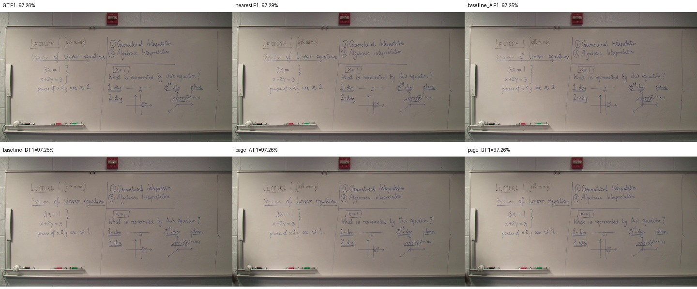
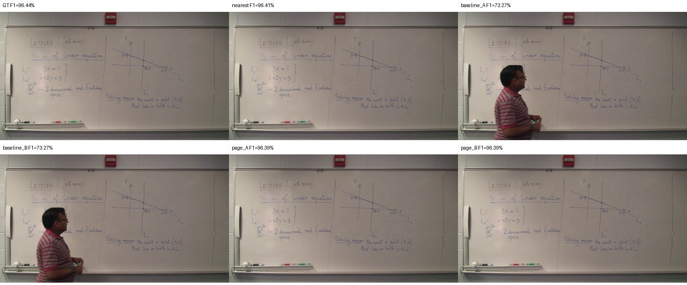
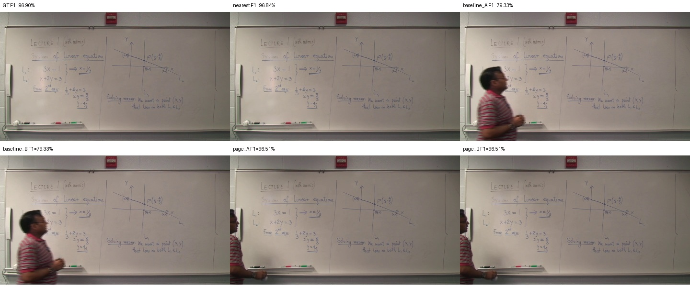

p00000 · 0.00–365.87초 · 대표 358.358초
확인된 최종 판서 노출 추정 100.0% · 경계 confirmed_erasure_or_revision · 품질 표시 []

기존 141개 중간 상태 → 누적 판서 4개. A는 원본 픽셀만 사용합니다. 페이지 B가 있으면 실제 결과를 비교하며, 원본 유지와 합성은 JSON의 상태·사유로 구분합니다.
| 출력 | Recall | Precision | F1 |
|---|---|---|---|
| GT | 99.56% | 94.32% | 96.87% |
| nearest | 99.53% | 94.30% | 96.84% |
| baseline_A | 96.42% | 74.24% | 83.28% |
| baseline_B | 96.42% | 74.24% | 83.28% |
| previous_micro_A | 99.51% | 94.17% | 96.77% |
| page_A | 99.48% | 94.12% | 96.72% |
| page_B | 99.48% | 94.12% | 96.72% |
기존 이진화·회수율·정밀도·F1 계산을 그대로 사용했습니다. 완성 판서는 GT 스냅샷 이후의 추가 필기를 포함할 수 있습니다. GT는 평가에만 사용했습니다.



확인된 최종 판서 노출 추정 100.0% · 경계 confirmed_erasure_or_revision · 품질 표시 []
확인된 최종 판서 노출 추정 100.0% · 경계 confirmed_erasure_or_revision · 품질 표시 []

확인된 최종 판서 노출 추정 100.0% · 경계 confirmed_erasure_or_revision · 품질 표시 []

확인된 최종 판서 노출 추정 100.0% · 경계 end_of_video · 품질 표시 []